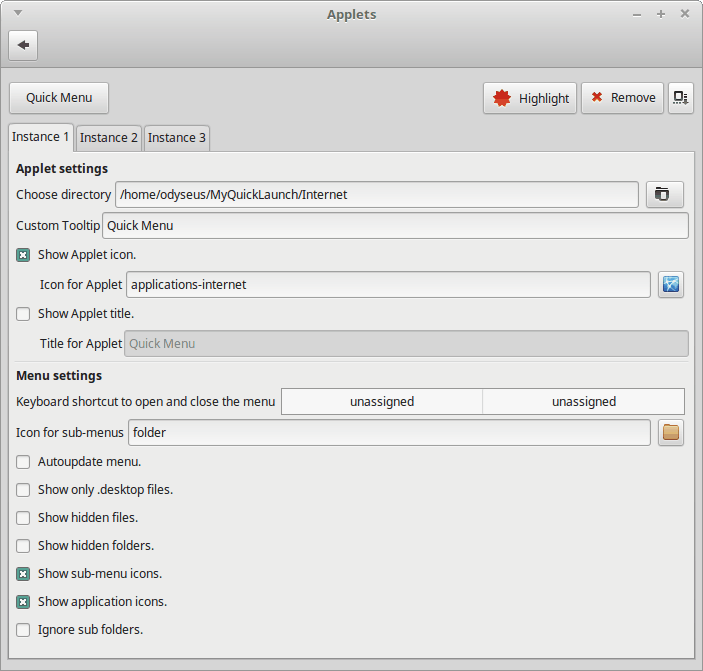

Quick Menu applet description
The function of this applet is very simple, create a menu based on the files/folders found inside a main folder (specified on this applet settings window). The files will be used to create menu items and the sub folders will be used to create sub-menus.
Compatibility
Tested and working on Cinnamon version 3.0.7.
Features
- More than one instance of this applet can be installed at the same time.
- A hotkey can be assigned to open/close the menu.
- Menu items to .desktop files will be displayed with the icon and name declared inside the .desktop files themselves.
Options

Applet settings
- Choose main directory: Choose a directory with files and/or folders in it. The files will be used to create the menu items. The folders will be used to create sub-menus.
- Custom Tooltip: Set a custom tooltip for the applet.
- Show Applet icon.: Display this applet icon.
- Icon for Applet: Set a custom icon for the applet.
- Show Applet title.: Display this applet title.
- Title for Applet: Set a custom title for the applet.
Menu settings
- Keyboard shortcut to open and close the menu: Sets a hotkey to open/close the menu.
- Icon for sub-menus: Set a custom icon for the sub-menus.
- Style for sub-menus: Set a custom style for the sub-menus. After changing this setting, the menu has to be updated manually (Update menu item from the applet context menu).
- Style for menu items: Set a custom style for the menu items. After changing this setting, the menu has to be updated manually (Update menu item from the applet context menu).
- Auto-update menu.: If enabled, every time the menu is opened, the applet will scan the main folder for added/deleted/modified files/folders and rebuild the menu. If disabled, the menu has to be updated manually from its context menu.
- Show only .desktop files: If enabled, only .desktop files will be used to create the menu. If disabled, all file types will be used to create the menu.
- Show hidden files: If enabled, hidden files will be used to create menu items.
- Show hidden folders: If enabled, hidden sub folders will be used to create sub-menus.
- Show sub-menu icons: If disabled, all sub-menu items will be created without icons.
- Show menu items icon: If disabled, all menu items will be created without icons.
- Allow sub-menus to each have their own icon: Read the section called How to set a different icon for each sub-menu for details about the usage of this option.
- Name for the file containing the icons for sub-menus: Read the section called How to set a different icon for each sub-menu for details about the usage of this option.
- Ignore sub folders: If enabled, the sub folders found inside the main folder will be ignored and sub-menus will not be created.
How to set a different icon for each sub-menu
- Create a file at the same level as the folders that will be used to create the sub-menus.
- The file name can be customized, doesn't need to have an extension name and can be a hidden file (a dot file). By default is called 0_icons_for_sub_menus.json.
- Whatever name is chosen for the file, it will be automatically ignored and will never be shown on the menu.
- If any sub-folder has more folders that need to have custom icons, just create another 0_icons_for_sub_menus.json file at the same level that those folders.
- The content of the file is a JSON object and has to look as follows:
{ "Folder name 1": "Icon name or icon path for Folder name 1", "Folder name 2": "Icon name or icon path for Folder name 2", "Folder name 3": "Icon name or icon path for Folder name 3", "Folder name n": "Icon name or icon path for Folder name n" }
- Warning!!! JSON "language" is very strict. Just be sure to ONLY use double quotes. And the last key/value combination DOESN'T have to end with a comma (Folder name n in the previous example).
Image featuring different icons for each sub-menu and different icon sizes

Bug report and feature request
Spices comments system is absolutely useless to report bugs with any king of legibility. In addition, there is no notifications system for new comments. So, if anyone has bugs to report or a feature request, do so on this applet GitHub page. Just click the Website button next to the Download button.
Change Log
1.02
- Fixed the known issue of not displaying an icon for certain file types.
1.01
- Fixed the need to restart Cinnamon after adding this applet to the panel.
- Added option to allow custom icons for each individual sub-menu.
- Added options to set a custom size for sub-menus and menu items icons.
- Removed style sheet from applet folder (overwritten by each applet update) in favor of options to set styles for menu items and sub-menus (persistent across updates).
1.00
- Initial release.